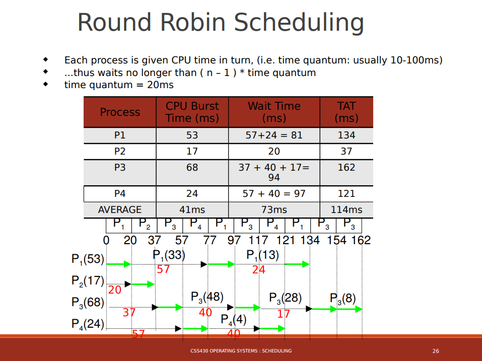
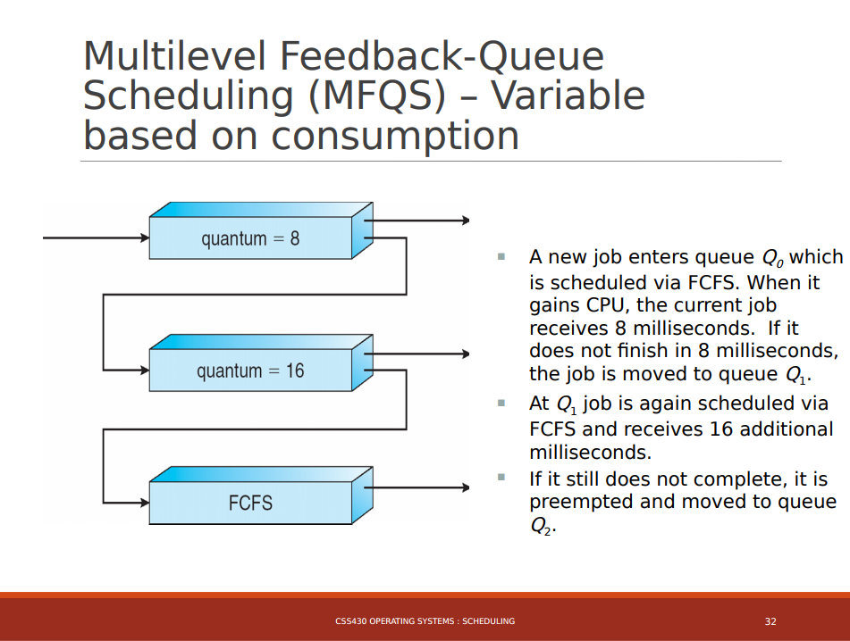
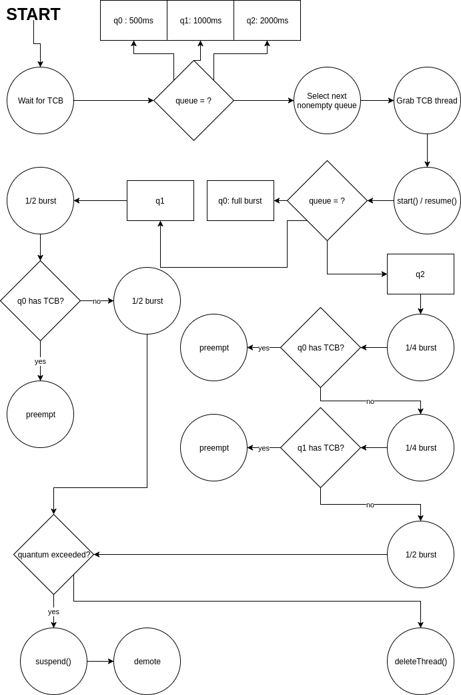
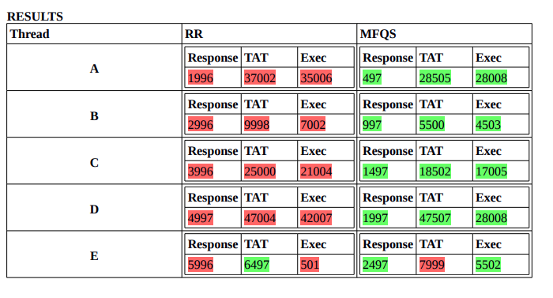
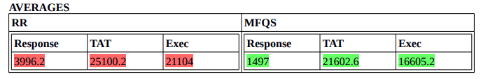

Lots of threads, not as many processor cores. In this project for 430, we learned how to juggle multiple tasks concurrently within ThreadOS.
From the assignment page:
This assignment implements and compares two CPU scheduling algorithms, the round-robin scheduling and the multilevel feedback-queue scheduling. The step-by-step procedure to complete this assignment is:
- Observe the behavior of the ThreadOS Scheduler which uses a Java-based round-robin scheduling algorithm. Consider why it may not be working strictly in a round-robin fashion.
- Redesign the ThreadOS Scheduler using Thread.suspend() and Thread.resume() so that it will rigidly work in a round-robin fashion.
- Implement a multi-level feedback-queue scheduler for ThreadOS.
- Compare the rigid round-robin and multi-level feedback-queue schedulers using test thread programs.
I've seen thread concurrency before in other programming courses, but never from the perspective of the operating system. Somehow, the kernel has to manage threads
(and processes) such that they can get CPU time. Given that most CPUs are at least single threaded dual cores, there is some flexibility with this but it's not
as if many threads can be run in true concurrency.
Therefore, tasks must be scheduled according to some kind of algorithm. There should at least be the impression of concurrency to the extent that the hardware allows,
since that is the software's intention. There are many scheduling algorithms, and often times when active tasks exceed the capacity of all cores, tasks get interleaved.
In otherwords, they pass CPU time back and forth between each other by means of interrupts, at a very fast rate, making it appear as though many tasks are making progress
at the same time.
Like every project in 430, we are to develop a component of the ThreadOS system files. ThreadOS is virtual CLI OS that runs in the Java Virtual Machine and employs
many of the practices and structures of Unix. In this project, we develop two variants of Scheduler. One with
round-robin and the other with
a Multilevel Feedback Queue.
Here are lecture slides introducing the two:


Put simply, RR will take threads as they arrive (queue) and assign them a pre-determined quantum. The quantum is milliseconds of CPU time. If the
thread terminates before its quantum has depleted, then the next thread in queue gets fresh quantum. However, if the quantum depletes and the thread
has not terminated, then the thread is preempted (execution paused) and placed at the tail of the queue. The next process gets fresh quantum.
MFQ is an expansion on RR. MFQ has multiple queues, where the first queue is the highest priority but gives the least quantum. Lower queues give
more quantum, but with less priority. With this scheme, a thread that exceeds its quantum in queue 1 will be demoted to the head of queue 2. It
will not get its quantum until q1 is empty. The same goes for all further queues.
We were given all of ThreadOS's ready components to implement these two algorithms. Scheduler, like everything in ThreadOS, is a thread
itself. It maintains its own bonafide queue that holds TCB objects, or Thread Control Blocks, which are links that allow for the
suspending and resuming of various tasks running on ThreadOS.
We were responsible only for the Scheduler logic. It is assumed that Scheduler will have its queue populated by Kernel,
since it can call Scheduler's public add method.
The code below is pseudo as an academic precaution.
RR was simple enough, roughly being implemented as follows:
run() {...while(queue has TCBs)get head TCB from queuegive quantumif thread did not terminatepause and demote to tail of queue...}
MFQ was trickier. An queue array of size 3 was added, and mechanism that tracks thread priority's and support thread
demotion was needed:
run() {...while(true)if(nothing in any queues) continue;if(queue at level is empty) moveDown();grab head TCB at current queue levelgive current level quantumif exceeded {pause threadsave TCB to tempdelete TCB from current queueif lower queue available, add temp TCB to tail of queue at level + 1else just add to self queue at tail}...}

The provided tests for these algorithms simply spawned a series of threads that would run concurrently. ThreadOS is set up to announce these
threads as they are receiving quantum, which can reveal whether or not the scheduler is exhibiting the appropriate behavior.
The test outputs metrics like response time (from thread spawn to first quantum), turn around time (spawn to termination) and exec time.
With my implementations, I got the following results:


MFQ yeilds better performance because context switches are costly to the OS. Every preemption requires that a TCB have its state saved and moved.
Every time the OS is forced to demote a thread (and thus make a context switch), MFQ tries to reduce the chance of another expensive context
switch by giving that long thread more quantum so that it can hopefully terminate on time.
Variations of MFQ are in use by many people everyday, seen in Windows and OSX. I can only wonder how exciting it must have been to come up with
these interesting solutions in the early days of computing.
A.